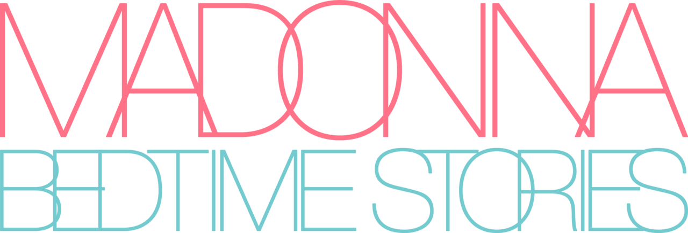
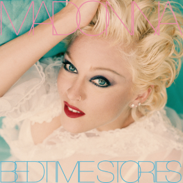
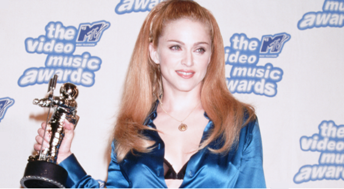

Bedtime Stories es el sexto álbum de estudio de Madonna. Lanzado a la venta en 1994, este proyecto fue tuvo un éxito moderado debido al fracaso de Erotica, sin embargo, logró superar en números a dicho álbum. Se destaca por su enfoque más introspectivo y emocional. Cuenta con un total de 11 canciones que toman un sonido más influenciado por el R&B y el trip hop de artistas como Massive Attack y Björk, la cual escribió la canción "Bedtime Story" para Madonna. En este álbum se encuentra la canción "Take a Bow", el 11º sencillo de Madonna en llegar al #1 en el Billboard Hot 100 (se mantuvo en la cima por 7 semanas).

Ganando un VMA en 1995 después de que Courtney Love le tirara piedras en plena entrevista.